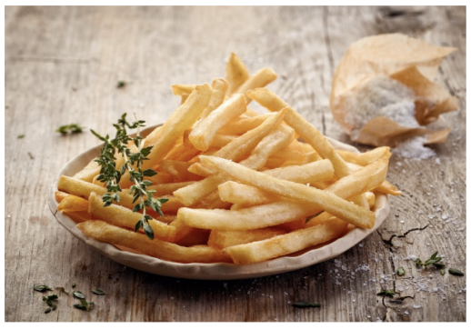

Papas Fritas
Receta de papas fritas caseras

Ingredientes
- 3 o 4 papas (300grs)
- Aceite
- Sal
Elaboración (Pasos)
- Pelas las papas
- Cortarlas en juliana
- Calentar el aceite en una sarten
- Cocinar hasta que queden doradas
- Removerlas del aceite y salar a gusto